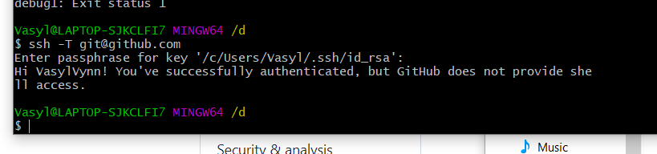

- git config --global user.name blabla - This command is to set your Git Username
- git config --global user.email blabal@bla - This command is to set your Git Email
- git init - Create an empty Git repository or reinitialize an existing one
- git status - Show the working tree status
- git add - Add file contents to the index
- git commit - Record changes to the repository
- git log - Show commit logs
- git checkout - Switch branches or restore working tree files
- git branch - List, create, or delete branches
- git push - Update remote refs along with associated objects
- git pull - Fetch from and integrate with another repository or a local branch
- git merge - Join two or more development histories together
- git clone - Clone a repository into a new directory
- git revert - Revert some existing commits
- git reset - Reset current HEAD to the specified state
- git rebase - Reapply commits on top of another base tip
- git cherry-pick - Cherry picking in Git means to choose a commit from one branch and apply it onto another
- git stash - It is designed to put the current changes in a separate repository and return the files to their original state later.
A .gitignore file is a plain text file where each line contains a pattern for files/directories to ignore.
